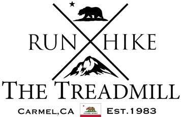
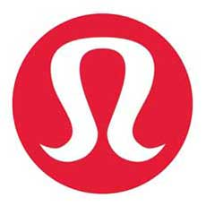

Shops
The Treadmill in Carmel
Since 1983, The Treadmill has held a tradition of a friendly, community driven, running, hiking and athletic-leisure apparel & footwear store.The Treadmill is respected in our community for providing high quality, prescriptive shoe fitting services and leading technical apparel to athletes of all skill levels.
The Treadmill websitelululemon - Monterey
lululemon is on a mission to bring their passion for the #sweatlife to everyone in the Monterey Bay area. They offer a wide variety of community sweats and local events. You can always find their latest schedule posted in store and on their facebook page #lululemonmonterey. Stop by their store in the Del Monte Shopping Center and one of their educators will give you all the details and help you navigate their super technically designed gear!
lululemon - Monterey facebookFeet Fleet - Monterey

The local Feet Fleet in downtown Monterey right on Alvrado Street sells running shoes and other running apparel.
Feet Fleet Santa/Cruz Monterey websiteFitness groups
Monterey Running Society

They meet Thursdays at 6pm at local Brewerey check their strava for which one as the location may change. Open to any and all, near and far, who like any of the following: Friendship, Road running, Trail running, Light jogging, Heavy jogging, Socializing, Beer drinking, Water drinking, Walking, Moseying, A general thirst for life, Stairs, Escalators, Moving carpets at the airport, Getting to know your fellow runners, Sneaking a beer on a week night and not telling your significant other, Bragging about your recent race result, Looking to run your first race.
Monterey Running Society Strava clubSalinas Valley Elite - Running Club
Salinas Valley Elite Running Club is made up of beginners to seasoned athletes. They are civic-minded runners who love to explore our beautiful county, promote health and fitness, and give back to the community. Enjoy the encouragement, support, and motivation that a group can provide. SVE welcomes all ages and abilities. They enjoy participating in local races and working together to achieve fitness goals.
Salinas Valley Elite websiteKelp Krawlers - Informal Open Water Swimming
Intrested in doing open wanter swimming in the ocea? All are welcome with the Kelp Krawlers. An informal gathering of open water swimmers. They Meet: Sunday, 11:15am at Lovers' Point, Pacific Grove, (year round). Visit their Facebook page for additional swims.
Kelp Krawler Facebook pageThe Triathlon Club of Monterey
They are a welcoming group of athletes, beginner and experienced, who enjoy training together along the beautiful Monterey Peninsula.
The Triathlon Club of Monterey websiteVelo Club Monterey
The Velo Club Monterey (VCM) prides itself on promoting cycling around the community. It’s not just about racing and recreation. VCM members regularly volunteer during the Bike Week events in May, at bicycle rodeos throughout the year, at local races and centuries, and work tirelessly to advocate bicycles and bicycling wherever they go.
Velo Club Monterey websiteMonterey Bay Ultimate
Monterey Bay Ultimate had a pickup game start around 1990 and is going strong. Games are played on Wednesday nights year round (weather permitting). We play on grass and switch to a lit field during the winter months. Join us if you're looking to play in the Monterey Bay. All levels welcome!
Monterey Bay Ultimate Facebook groupLocal Organizations
Big Sur Marathon Foundation
The Big Sur International Marathon was established in 1986 and today is managed by a 15-person Governance Board of the non-profit Big Sur Marathon Foundation.
Big Sur Marathon Foundation websiteSalinas Valley Elite - Running Club
Since 1978, our generous donors and partners have conserved and cared for over 40,000 acres throughout Monterey County. All of Big Sur Land Trust’s efforts -- land protection, stewardship, outdoor youth programs, volunteer opportunities, community engagement and events
Big Sur Land Trust website